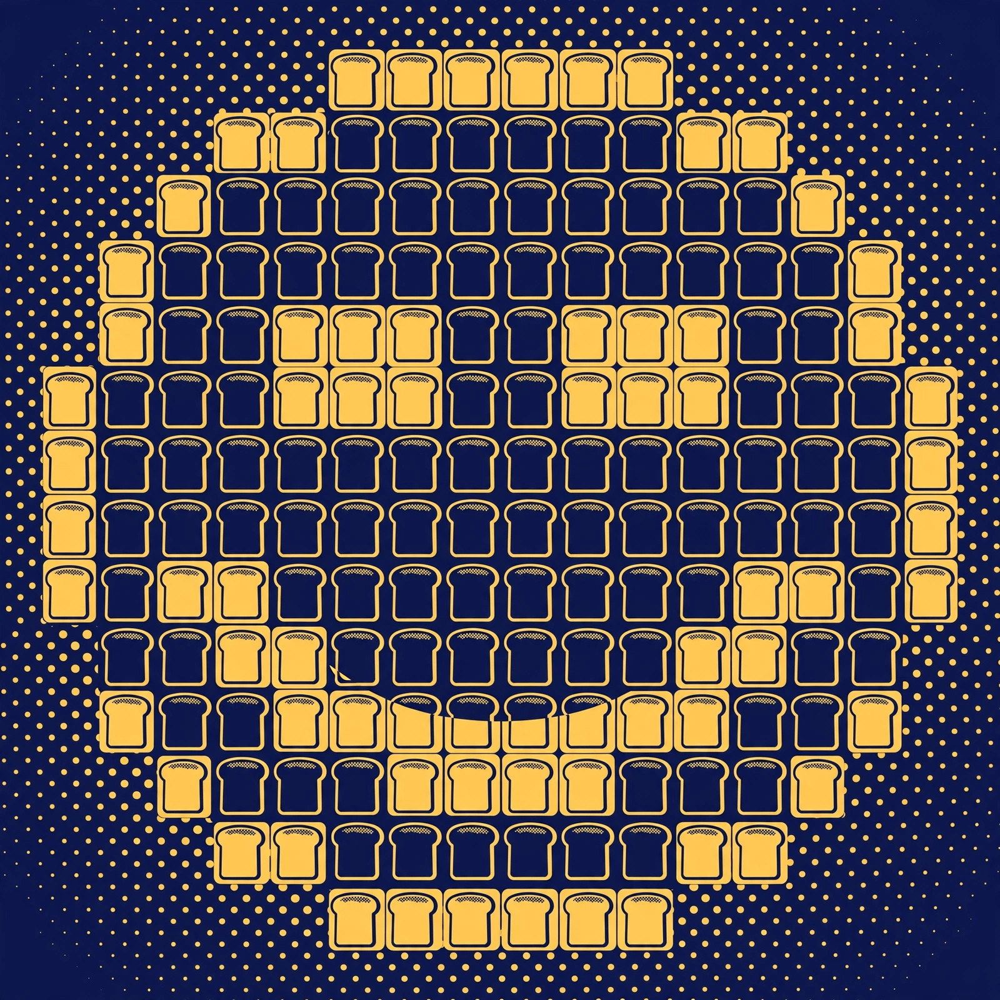
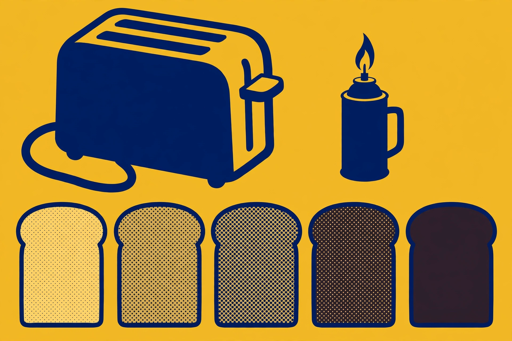

Toast Mosaics: Pixel Art for the Ambitious

A toast mosaic is what happens when someone looks at a single slice of toast and thinks, "Yes, but what about two thousand of them?" Artists toast slices to varying degrees — from ghostly untoasted to fully burnt — and assemble them into images, with each slice acting as one pixel. It is pointillism for people who own toasters, and the internet is full of gorgeous photos of other people's mosaics and almost no guidance on making your own. This is the guidance.
The three styles
The practitioners of the form work in three recognized styles. The toast mosaic is the pure form: hundreds or thousands of slices, each toasted to a precise shade, arranged into an image. The individual slice is a miniature — one slice, one image, made with a torch, a stencil, or spreads. Slice manipulation is the hybrid: a large multi-toast image where individual slices also carry detail work. Know which one you are attempting before you buy bread, because the shopping lists differ by orders of magnitude.
The scale problem
Here is where ambition meets arithmetic. The artwork "The Toaster" — a 16.5-by-15-foot portrait of a toaster, made entirely of toast — used 2,500 pieces of bread. Preparation took several days, several people, and multiple toasters working in shifts. Do the density math: 2,500 slices across 22.5 square meters works out to roughly 111 slices per square meter. A modest one-meter-square wall piece needs just over a hundred slices. A postcard-sized piece needs a few dozen.
At the far end of ambition sits Maurice Bennett, known as "The Toastman," whose Mona Lisa mosaic used 6,000 slices of toast, shaded by burning bread under a cast-iron stencil with a blowtorch. You are not Bennett. Bennett has a stencil and a blowtorch and presumably the patience of a saint. But his number is useful: it tells you what a large, detailed portrait costs in bread.
The planning sequence
Step 1: Pick your image and pixelate it. Choose a simple, high-contrast image — a logo, an icon, a face with strong shadows. Reduce it to a grid in any image editor: each cell of the grid becomes one slice. Fewer cells, bigger mosaic; more cells, more detail and more bread.
Step 2: Map shades to toaster settings. Decide on your palette — three to five shades is plenty for a first attempt: pale, light gold, medium amber, dark brown, and one dramatic near-black. Toast sample slices at each setting and line them up. This is your swatch card. It is also breakfast.
Step 3: Count your slices per shade. Tally the grid: how many cells need each shade. This is the step everyone skips and the step that separates a finished mosaic from a half-finished pile of toast.
Step 4: Toast in batches, assembly-line style. All the pale slices, then all the light gold, and so on. Bag each shade separately the moment it cools. Label the bags. Future you, assembling at midnight, will be grateful.
Step 5: Assemble on a board. Lay the slices out on a large board or table in grid order before fixing anything. Photograph the layout from a ladder or a chair — distance is where the magic happens. Only then decide how to mount it: glue for permanence, or a tray and gravity for the edible version.

Method comparison
| Method | Best for | Cost | Shade control |
|---|---|---|---|
| Toaster batches | First-timers; mosaics under a few hundred slices | $ (the toaster you own) | Good — the dial is your palette |
| Kitchen torch | Detail work; individual slices; dark dramatic shades | $$ (torch + fuel) | Excellent — paint with flame |
| Stencil + torch | Large detailed portraits, the Bennett approach | $$ (torch + stencil material) | Excellent — crisp edges |
The honest recommendation: start with the toaster. It is the method with the lowest cost, the gentlest learning curve, and the highest breakfast yield. One safety note before you shop: a kitchen torch is an open flame — clear the workspace, keep it away from anything flammable, and never leave it lit and unattended.
The bread budget
Bread prices checked on October 10, 2026: a 675 g loaf of white sandwich bread listed at $3.99 CAD. Budget the project the honest way: count your slices from the grid tally in step 3, divide by the slices in your loaf, multiply by the dated price — and then buy one extra loaf, because toasting has casualties. The 2,500-slice benchmark, on the other hand, is a catering-scale bread order and a multi-day toasting operation with a crew. Scale your ambition to your bread budget, not the other way around.
What success looks like
Success is stepping back ten feet and watching a hundred brown squares resolve into a face. Up close it will look like exactly what it is: a pile of toast. That is not a flaw in the piece. That is the piece. Photograph it from the magic distance, eat the mistakes, and hang the swatch card on the fridge as a trophy.